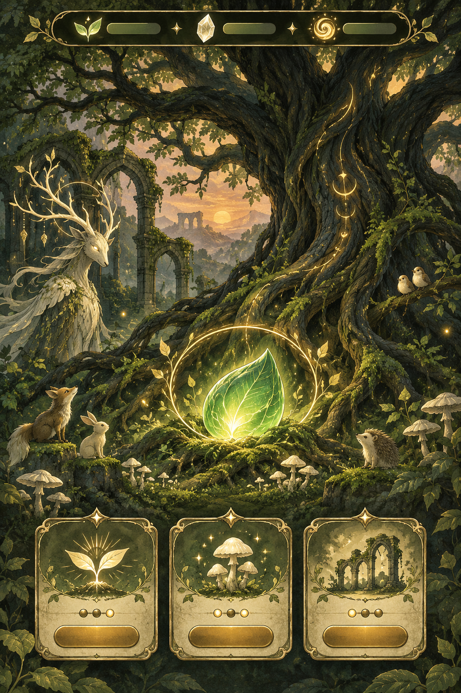
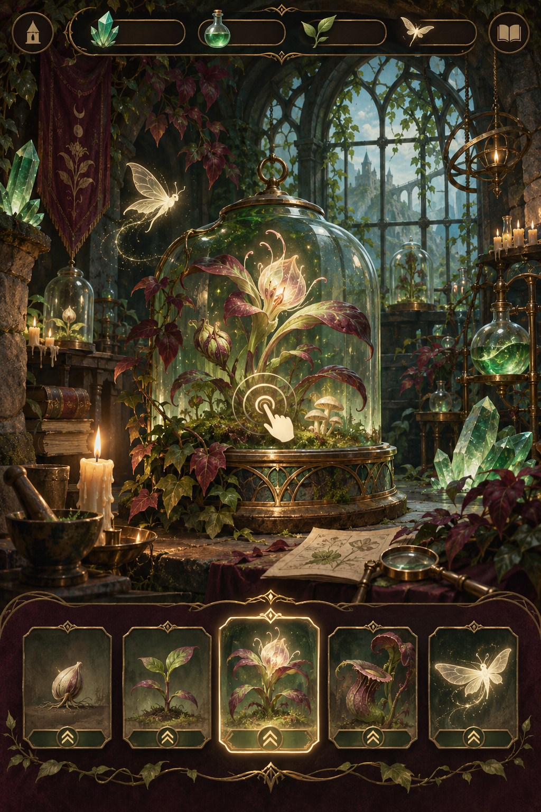

Лес, который узнаёт тебя
Касания дают первую ману. Мох, корни и грибы начинают работать один за другим. Лунный мотылёк помогает найти след старой тропы. Каждая цель ведёт прямо к нужному источнику или открытию.
ТЁМНОЕ ФЭНТЕЗИ · МАГИЯ · ЭВОЛЮЦИЯ
Мир, который помнит
каждое возвращение.
Из первой искры — в лес, полный древних существ. Из забытой башни — в королевство. 42 вехи ведут к Маяку рассвета.
Открыть кампанию Учебный пример значков ↗Рабочее название · Страница концепции
Иллюстрации показывают настроение будущей игры.

01 / ЗАМЫСЕЛ
Ты — Хранительница чащи. Мир застрял в повторяющихся эпохах. Под корнями старого дерева ещё теплится жизнь — с неё начинается путь к рассвету.
Сначала ты возвращаешь свет мху и учишь лес производить ману. Первое встреченное существо узнаёт тебя: вы уже виделись в прошлой эпохе. Его следы ведут к башне и забытому королевству.
В браузерной кампании — 42 вехи, 9 источников маны и 15 существ. Ориентир баланса — финал примерно за три месяца при 7–8 часах активной игры в день. Это цель проверки на симуляции; игроками такая длительность ещё не подтверждена. Офлайн-доход дополняет активную игру.
ИСТОРИЯ / ВЕРНУТЬ МИРУ РАССВЕТ
Правители пытались спасти королевство от гибели и заключили его в повторяющееся время. Катастрофа отступила, но рассвет исчез. Ты собираешь память прошлых попыток, чтобы закончить заклятие.
Касания дают первую ману. Мох, корни и грибы начинают работать один за другим. Лунный мотылёк помогает найти след старой тропы. Каждая цель ведёт прямо к нужному источнику или открытию.
Стеклянная лисица открывает путь в башню. Здесь начинается первая осмысленная смена эпохи: производство возвращается к началу, а найденные воспоминания остаются. Восстановленный архив раскрывает причину заклятия.
Ты находишь дорогу к королевству, восстанавливаешь маяк и собираешь силу для последнего ритуала. Когда условия выполнены, маяк загорается и история получает финал. После эпилога остаются свободное развитие, коллекция и события.
Сюжетные достижения и уже открытые разделы сохраняются между эпохами. Значки событий развивают свои темы; участие в событиях не требуется для финала основной истории. Отдельной мини-игры с выращиванием зверьков не планируем.
Начать путешествиеПрежняя короткая версия и её прогресс сохранены отдельно: открыть старую пробу. Новая кампания использует своё сохранение.
02 / ОДИН МИР, ТРИ ОБЛАСТИ
Три понравившихся визуала складываются в последовательное путешествие. Нажми на область, чтобы узнать её роль.
НАЧАЛО / ЖИЗНЬ И МАНА
Светящийся мох, корни и грибной круг становятся первыми источниками маны. Первый мотылёк узнаёт тебя, хотя эта встреча кажется новой.
Визуальные эскизы. Расположение игровых кнопок уточним на прототипе.
03 / КАК В ЭТО ИГРАТЬ
Касания дают первую ману. Затем ты усиливаешь источники, открываешь существ и восстанавливаешь мир. Следующая цель показывает конкретное действие и награду.
Касайся сердца чащи, чтобы получить ману. Первые источники открываются один за другим.
Пробуждённые растения и постройки производят ресурсы сами.
Открывай ближайшие знания в Древе: они приводят новых существ и продолжают сюжет.
В конце эпохи сохрани её память и открой возможности следующей.
Ресурсы действующей браузерной версии
С начала игры. Открытие существ, постройки и улучшения.
У каждой темы своя валюта. Она тратится внутри текущего захода и не заменяет ману основной кампании.
После перерождения. Усиливает касания и производство.
Сердце чащи едва светится. В начале виден только мох и цель: собрать 15 маны и купить его первый уровень. Мох начинает производить ману сам — появляется следующий источник, живые корни. После корней открывается грибной круг. Когда работают все три, становится доступно древо исследований. Первое существо, лунный мотылёк, удваивает добычу мха и открывает коллекцию.
Башня знакомит с перерождением, а после первой смены эпохи появляются порталы событий. Новые разделы остаются доступными в следующих эпохах. Короткие сюжетные сцены можно перечитать в летописи.
После первого существа появляются покупки ×1, ×10 и «Макс.». На уровнях 10, 25, 50 и дальнейших рубежах производство источника удваивается. Перед покупкой виден полный доход после усиления. После встречи с мотыльком в карточках источников доступны ритуалы роста: каждый добавляет 0,5% производству выбранного источника за ману. Это дополнительное усиление по желанию; сюжет не требует определённого числа ритуалов.
04 / ЧТО ПОЯВИТСЯ ПО МЕРЕ РОСТА
Новые знания показываются по мере прохождения связанных целей. Древо устроено как читаемый список ближайших и уже знакомых открытий. В текущей кампании путь задан сюжетом; выбор разных направлений эпохи пока не реализован.
Существо — крупная покупка, которая заметно усиливает определённый источник. Лунный мотылёк удваивает добычу мха, моховик — грибного круга, стеклянная лисица — корней. Рогатый страж утраивает добычу корней; вместе с лисицей получается ×6. Бонус применяется ко всем уже купленным и будущим уровням этого источника.
В кампании 15 существ. В башне появляются чернильная сова, саламандра и другие помощники, в королевстве — звёздная выдра, медный дракон и новые спутники. Перед покупкой видны цена, усиливаемый источник и его доход до и после открытия. Без купленных уровней источника доход остаётся нулевым.
После перерождения вид остаётся в коллекции, а его помощь нужно снова активировать исследованием в новой эпохе. В карточке видно, помогает ли существо сейчас. Значки временных событий продолжают копиться по своим правилам.
Возможное расширение — отправлять спутников за пределы чащи, получать находки и небольшие истории. В действующей версии экспедиций нет; их правила ещё предстоит выбрать.
Мир снов и подземное царство могут стать отдельными постоянными областями со своими открытиями. Пока это идеи для расширения. Работающие временные мини-игры доступны в Порталах.
05 / ОБЯЗАТЕЛЬНАЯ МЕХАНИКА
Перерождение открывается после исследования «Окно башни». В каждой эпохе башню нужно открыть снова, а для награды — превзойти прежний рекорд добытой маны. При нулевой новой памяти переход недоступен. Перед ним игра показывает награду и объясняет, что сохранится.
Знакомые исследования стоят 3% от первоначальной цены: это ускоряет возвращение после смены эпохи. Основное перерождение не сбрасывает активное событие. После финала истории можно продолжить развитие; пройденная кампания остаётся завершённой.
06 / ОБЯЗАТЕЛЬНАЯ МЕХАНИКА
В Порталах работают три мини-игры: «Сад лунных мотыльков», «Забытые зелья» и «Песнь каменных великанов». Тема меняется каждые 72 часа; та же тема возвращается через 9 дней. В каждой — 3 производителя, 6 улучшений и 9 наград за развитие.
Свой прогрессКаждый заход начинает производство заново. Покупаешь источники и улучшения, чтобы достичь девяти рубежей. Валюта и производство относятся только к этому заходу.
Своя памятьНа рубежах 3, 6 и 9 значки выдаются сразу: +5%, +10% и +15%. Повторные экземпляры копятся. Новый бонус начнёт действовать в следующем заходе именно этой темы.
Польза от части путиДаже один значок помогает следующей попытке. Все три усиливают её ещё больше.
Этот учебный пример объясняет накопление бонусов. Выбери число этапов, заверши условный заход и начни следующий. Здесь нет настоящего производства и расписания; действия не меняют сохранение кампании. В самой игре награды получаются за развитие, а значки выдаются при достижении рубежей.
Загружается пример событий…
Значки каждой темы хранятся отдельно. Новая награда не ускоряет уже начавшийся заход, а готовит следующий. Участие в событиях не требуется для завершения основной кампании.
07 / ИГРА ДЛЯ ANDROID
Вертикальный экран, крупные зоны касания и четыре раздела: Мир, Древо, Существа и Порталы. Можно играть активно и возвращаться за накопленной маной.
Кампания сохраняет прогресс на устройстве. Эта страница описывает игру и содержит отдельный учебный пример; облачных сохранений и установки Android-приложения здесь пока нет.

Предлагаемая навигация игры
08 / ОТ ЗАМЫСЛА К ИГРЕ
42 вехи, 9 источников и 15 существ. Постепенное открытие разделов, усиления производства, перерождение и три временные мини-игры с накоплением значков.
Цель симуляции — около 90 дней при 7–8 часах активной игры ежедневно, с добычей в отсутствие. Это ещё не результат испытаний игроками. Финиш зависит от развития: обязательного ожидания определённой даты нет.
Установка тестовой сборки, размеры кнопок, читаемость, закрытие и возвращение в игру, сохранение прогресса.
Возможные будущие дополнения: выбор разных путей, экспедиции, параллельные миры и новые темы событий. Эти расширения ещё не реализованы.
В нынешней версии работают обе любимые механики:
«начать снова сильнее» и «дождаться возвращения любимого события».
Дальше — проверить темп на реальных игроках, доработать истории спутников и подготовить Android-сборку. Облачные сохранения и дополнительные направления развития пока не реализованы. Названия и баланс можно уточнять по результатам игры.